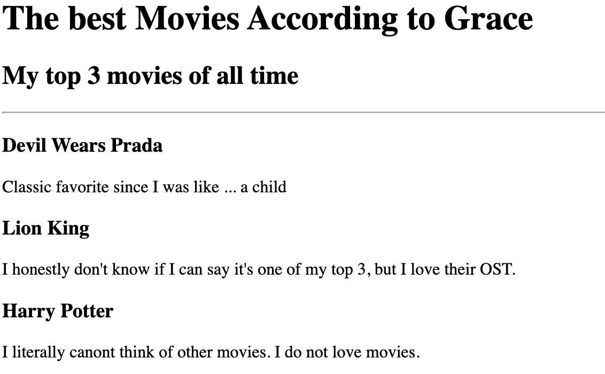
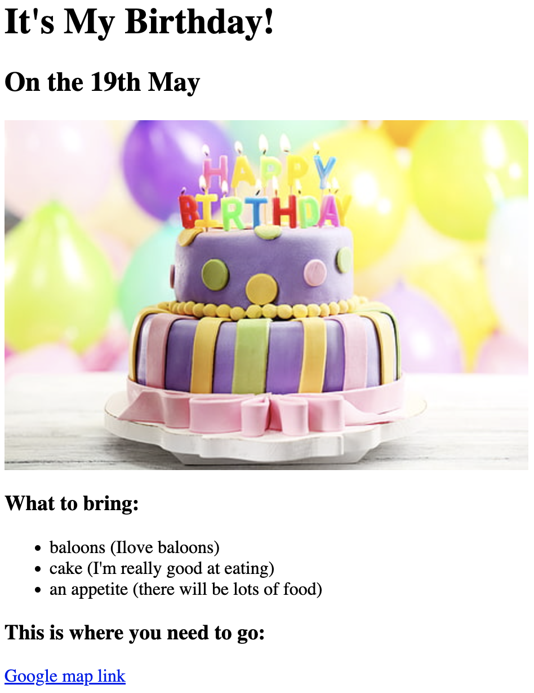

Grace's Portfolio
I'm going to be a software engineer

The Best Movies According to Me
My top 3 of all time
Devil Wears Prada
Classic favorite since I was like ... a child
Lion King
I honestly don't know if I can say it's one of my top 3, but I love their OST.
Harry Potter
I literally canont think of other movies. I do not love movies.
It's my birthday!
On the 19th of May for real
